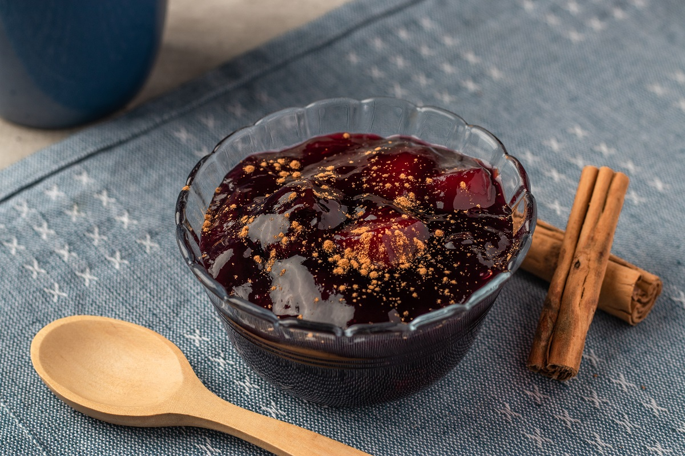

¿Cómo hacer la mazamorra morada?
Ingredientes:
- ½ kilogramo de maíz morado
- ½ onza de zumo de limón
- 1 taza de harina de chuño o fécula de papa
- 6 litros de agua
- 1 taza de azúcar (al gusto)
- 3 ramas de canela
- Clavo de olor
- Corteza de una piña
Para servir
- Pasas (opcional)
- Canela en polvo
Instrucciones:
Pasos:
- Cocine en una olla a fuego medio, tres tazas de agua, la cáscara de naranja, la rama de canela, los clavos de olor y una pizca de sal, hasta hervir. Añada el arroz, tape la olla y cocine a fuego bajo por 15 minutos aproximadamente, hasta que el arroz esté graneado.
- Agregue las leches evaporada y condensada, y cocine, sin dejar de remover, hasta que tome punto. Vierta la vainilla y mezcle.
- Sirva el arroz con leche tibio o frío y esparza encima la canela en polvo.